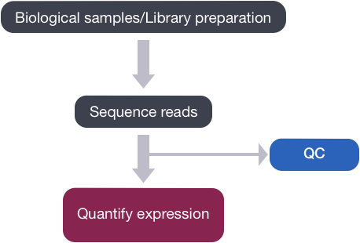

Learning Objectives:
- Practice using more features of Biowulf (loading modules, running software, parallelization)
- Describe the contents and format of a FASTQ file
- Create a quality report using FASTQC
- Open and look at the report(s) you generated using
- Optionally, transfer one of the HTML files to your local computer using
scp
Quality Control of FASTQ files
The first step in the RNA-Seq workflow is to take the FASTQ files received from the sequencing facility and assess the quality of the sequence reads.

Unmapped read data (FASTQ)
The FASTQ file format is the de facto file format for sequence reads generated from next-generation sequencing technologies. This file format evolved from FASTA in that it contains sequence data, but also contains quality information.
The sequencer self-reports how good of a job it thinks it did calling each base correctly. If you need a refresher on how sequencing works, you can watch this youtube video from Illumina. One way to think of the quality score is by how blurry the image is or how well it can be aligned to the previous image – see this timestamp within the video.
Similar to FASTA, the FASTQ file begins with a header line. The difference is that the FASTQ header is denoted by a @ character. For a single record (sequence read), there are four lines, each of which are described below:
| Line | Description |
|---|---|
| 1 | Always begins with @, followed by information about the read |
| 2 | The actual DNA sequence |
| 3 | Always begins with a +, and sometimes the same info as in line 1 |
| 4 | Has a string of characters representing the quality scores; must have same number of characters as line 2 |
Let’s use the following read as an example:
@HWI-ST330:304:H045HADXX:1:1101:1111:61397
CACTTGTAAGGGCAGGCCCCCTTCACCCTCCCGCTCCTGGGGGANNNNNNNNNNANNNCGAGGCCCTGGGGTAGAGGGNNNNNNNNNNNNNNGATCTTGG
+
@?@DDDDDDHHH?GH:?FCBGGB@C?DBEGIIIIAEF;FCGGI#########################################################
The line 4 has characters encoding the quality of each nucleotide in the read. The legend below provides the mapping of quality scores (Phred-33) to the quality encoding characters. Different quality encoding scales exist (differing by offset in the ASCII table), but note the most commonly used one is fastqsanger, which is the scale output by Illumina since mid-2011.
Quality encoding: !"#$%&'()*+,-./0123456789:;<=>?@ABCDEFGHI``| | | | |
Quality score: 0........10........20........30........40
Using the quality encoding character legend, the first nucelotide in the read (C) is called with a quality score of 31 (corresponding to encoding character @), and our Ns are called with a score of 2 (corresponding to encoding character #). As you can tell by now, this is a bad read.
Each quality score represents the probability that the corresponding nucleotide call is incorrect. This quality score is logarithmically based and is calculated as:
Q = -10 x log10(P), where P is the probability that a base call is erroneous
These probability values are the results from the base calling algorithm and dependent on how much signal was captured for the base incorporation. The score values can be interpreted as follows:
| Phred Quality Score | Probability of incorrect base call | Base call accuracy |
|---|---|---|
| 10 | 1 in 10 | 90% |
| 20 | 1 in 100 | 99% |
| 30 | 1 in 1000 | 99.9% |
| 40 | 1 in 10,000 | 99.99% |
Therefore, for the first nucleotide in the read (C), there is less than a 1 in 1000 chance that the base was called incorrectly. Whereas, for the the end of the read there is greater than 50% probability that the base is called incorrectly.
NOTE: What other ways can you think of for recording a quality score that corresponds to each base? What are the advantages/disadvantages?
Finding “bad reads” in a FASTQ using grep
Suppose we want to see how many reads in our file Mov10_oe_1.subset.fq contain “bad” data, i.e. reads with 10 consecutive Ns (NNNNNNNNNN), and capture these reads in a file for future analyses.
$ cd /data/$USER/rnaseq_course/raw_fastq
$ grep NNNNNNNNNN Mov10_oe_1.subset.fq
We get back a lot of reads or lines of text! You can add the -c option to count the number.
NOTE: What’s another way of counting lines?
Extracting the full FASTQ Reads
As we just learned, one read in a FASTQ file is actually represented by 4 lines. We would need to modify the default behavior of grep and specify some argument/options. To look for all available options for the grep command, we can type grep --help (or man grep).
The -B and -A arguments for grep will be useful to return the matched line plus one before (-B 1) and two lines after (-A 2). Since each record is four lines, using these arguments will return the whole record.
@HWI-ST330:304:H045HADXX:1:1101:1111:61397
CACTTGTAAGGGCAGGCCCCCTTCACCCTCCCGCTCCTGGGGGANNNNNNNNNNANNNCGAGGCCCTGGGGTAGAGGGNNNNNNNNNNNNNNGATCTTGG
+
@?@DDDDDDHHH?GH:?FCBGGB@C?DBEGIIIIAEF;FCGGI#########################################################
--
@HWI-ST330:304:H045HADXX:1:1101:1106:89824
CACAAATCGGCTCAGGAGGCTTGTAGAAAAGCTCAGCTTGACANNNNNNNNNNNNNNNNNGNGNACGAAACNNNNGNNNNNNNNNNNNNNNNNNNGTTGG
+
?@@DDDDDB1@?:E?;3A:1?9?E9?<?DGCDGBBDBF@;8DF#########################################################
Group separators (--), and how to remove them
You will notice that when we use the -B and/or -A arguments with the grep command, the output has some additional lines with dashes (--), these dashes work to separate your returned “groups” of lines and are referred to as “group separators”. This might be problematic if you are trying to maintain the FASTQ file structure or if you simply do not want them in your output. Using the argument --no-group-separator with grep will disable this behavior.
NOTE: What’s another way of getting rid of those
---lines?
$ grep -B 1 -A 2 --no-group-separator NNNNNNNNNN Mov10_oe_1.subset.fq
We can take this a step further and use > to direct our output to a file.
$ grep -B 1 -A 2 --no-group-separator NNNNNNNNNN Mov10_oe_1.subset.fq > bad_reads.fq
Looking at individual reads in a small FASTQ file is nice, but what about getting the whole picture for much bigger FASTQ files? This is where a program like FASTQC will be useful!
Working with Compressed Files
Sequencing data files can be huge - from a few megabytes to gigabytes. And with even more sequencing at decreasing price points, it’s not hard to run out of storage space. As a result, most sequencing facilities will give you compressed sequencing data files, and Biowulf recommends that you keep your FASTQ files compressed when at all possible.
The most common compression program used for individual files is gzip whose compressed files have the .gz extension. The tar and zip programs are most commonly used for compressing directories. Let’s take a look at the size difference between uncompressed and compressed files. We use the -l option of ls to get a long listing that includes the file size, and -h to have that size displayed in “human readable” form.
$ ls -lh /data/Bspc-training/shared/rnaseq_mov10/Mov10_oe_1.fq
$ ls -lh /data/Bspc-training/shared/rnaseq_mov10/Mov10_oe_1.fq.gz
To extract the file again, you could run gunzip filename.gz. However, there are many options for working with compressed files directly without extracting them to their full size again. Luckily for us, current versions of FASTQC can read .gz files directly. Another example is zcat – which is like cat except that it works on gzip-compressed (.gz) files! This is often paired with using pipe | into another command like below:
$ zcat /data/Bspc-training/shared/rnaseq_mov10/Mov10_oe_1.fq.gz | head
Check out this page from the University of Texas at Austin for more info and a longer tutorial about gzip.
Loading the FASTQC module
Now that we understand what information is stored in a FASTQ file, the next step is to examine quality metrics for our data. Rather than use built-in Bash tools though, we’ll use a specialized tool mde for this.
FastQC provides a simple way to do some quality checks on raw sequence data coming from high throughput sequencing. It provides a modular set of analyses, which you can use to obtain an impression of whether your data has any problems that you should be aware of before moving on to the next analysis.
FastQC does the following:
-
accepts FASTQ files (or BAM files) as input
-
generates summary graphs and tables to help assess your data
-
generates an easy-to-view HTML-based report with the graphs and tables
NOTE: > NOTE: Before we run FastQC, you should be on a compute node in an interactive session. We will start with the default
sinteractiveallocation which is 1 core (2 CPUs) and 768 MB/CPU (0.75 GB) of memory, which should be just fine for our purposes. See this Biowulf page for more information.$ sinteractiveAnd we should be in our rnaseq/ directory from within student directories:
$ cd /data/Bspc-training/$USER/rnaseq
Load the FastQC module
Before we start using software, we have to load the module for each tool. On Biowulf, this is done using an LMOD system. It enables users to access software installed on Biwoulf easily, and manages every software’s dependencies. The LMOD system adds directory paths of software executables and their dependencies (if any) into the $PATH variable.
Biowulf staff members have done the hard work of installing the software and all of its dependencies so that we don’t need to worry about that.
If we check which modules we currently have loaded, we should not see FastQC.
$ module list
If we try to run FastQC:
fastqc
We’ll get fastqc: command not found. This is because the FastQC program is not in our $PATH (i.e. it’s not in a directory that shell will automatically check to run commands/programs).
NOTE: How to check your $PATH?
To run the FastQC program, we first need to load the appropriate module, so it puts the program into our path. To find the FastQC module to load we need to search the versions available:
$ module spider fastqc
Once we know which version we want to use (often the most recent version), we can load the FastQC module.
Discussion point: What are some reasons we might NOT want to use the most updated version of a tool in certain cases?
$ module load fastqc/0.12.1
Once a module for a tool is loaded, you have essentially made it directly available to you to use like any other basic shell command (for example, ls). Now what happens when you list the modules?
$ module list
NOTE: How do you expect your PATH to change? Check to see if you were right!
As a reminder - some LMOD commands are listed below
| LMOD command | description |
|---|---|
module spider |
List all possible modules on the cluster |
module spider modulename |
List all possible versions of that module |
module avail |
List available modules available on the cluster |
module avail string |
List available modules containing that string |
module load modulename/version |
Add the full path to the tool to $PATH (and modify other environment variables) |
module list |
List loaded modules |
module unload modulename/version |
Unload a specific module |
module purge |
Unload all loaded modules |
Running FASTQC on our samples
Now, let’s create a directory to store the output of FastQC inside of the results directory you set up last week:
$ mkdir results/fastqc
We will need to specify this directory in the command to run FastQC. How do we know which argument to use?
$ fastqc --help
NOTE: When to use
man, when to use--helpor-h?Use
manfor built-in Bash commands. Use--helpor-hfor other tools. Sometimes you can run the tool with no arguments and it will print the help. Sometimes it might need another command. It depends, but-hseems to be fairly standard.
From the help manual, we know that -o (or --outdir) will create all output files in the specified output directory.
You can always check out the Biowulf page for more information about running specific modules in the context of our specific cluster! See the fastqc page as an example.
Specifying Input and Output Options:
Navigating to where we want to run the program: To make things simpler, let’s navigate to the directory where our input data is so we don’t need to use full path names for each of the input files.
cd raw_data
Specifying output location: From this directory, how would we specify that we want our output data to end up in the directory we just created? There are a few options based on what we know about full and relative paths. For example:
# don't run these, these are just options
fastqc -o ../results/fastqc
fastqc -o /data/$USER/rnaseq/results/fastqc
Specifying input files: FastQC will accept multiple file names as input, and we could simply list them individually like so. Note that for FastQC you don’t need to specify an argument before listing input files like we did before specifying the output location.
$ cd raw_data
$ fastqc -o ../results/fastqc file1_1.fq file1_2.fq file2_1.fq file2_2.fq
But we could also use our fancy, space-saving *.fq wildcard instead.
$ cd raw_data
$ fastqc -o ../results/fastqc *.fq
Did you notice how each file was processed pretty much one at a time?
Using Parallelization
FastQC has the capability of splitting up a single process to run on multiple cores! To do this, we will need to:
-
Exit the current interactive session and start another with more additional CPUs , since we started this interactive session with only the default 2 cores. We cannot have a tool to use more cores than requested on a compute node, or the scheduler (Slurm) will kill our job.
-
Specify an argument in FASTQC itself (-t) to process more than one input file at once
Exit the interactive session and start a new one with 6 cores:
$ exit #exit the current interactive session (you will be back on a login node)
$ sinteractive --cpus-per-task=6 --mem=2G
NOTE: Why did we choose 6? Why 2G?
Once you are on the compute node, check what job(s) you have running and what resources you are using.
$ squeue -u $USER
Now that we are in a new interactive session with the appropriate resources, we will need to load the module again for this new session.
$ module load fastqc/0.12.1 #reload the module for the new (6-core) interactive session
Because we are on a new compute node, get to the raw_data directory (remember we are on a new compute node now):
$ cd /data/Bspc-training/rnaseq/changes/raw_data
Run FastQC and use the multi-threading functionality of FastQC to run 6 jobs at once (with an additional argument -t):
$ fastqc -o ../results/fastqc -t 6 *.fq
# note the extra parameter we specified for 6 threads
Discussion Points:
-
Do you notice a difference? Is there anything in the output that suggests this is no longer running serially?
-
This overwrote our results. What is a way that we could prevent this from happening?
Viewing results from FastQC
For each individual FASTQ file that is input to FastQC, there are two output files that are generated.
$ ls -lh ../results/fastqc/
- The first is an HTML file which is a self-contained document with various graphs embedded into it. Each of the graphs evaluate different quality aspects of our data, we will discuss in more detail in this lesson.
- Alongside the HTML file is a zip file (with the same name as the HTML file, but with .zip added to the end). This file contains the different plots from the report as separate image files but also contains data files which are designed to be easily parsed to allow for a more detailed and automated evaluation of the raw data on which the QC report is built.
Viewing the HTML report
We will only need to look at the HTML report for a given input file. It is not possible to view HTML files directly on the cluster from the command line. We will view the HTML result for Mov10_oe_1.subset.fq by locally mounting an HPC System Directory so you can access the HTMLs locally.
What does this do?
The HPC System Directories, which include /home, /data, and /scratch, can be mounted to your local workstation if you are on the NIH network or VPN, allowing you to easily drag and drop files between the two places. Note that this is most suitable for transferring small file. Users transferring large amounts of data to and from the HPC systems should continue to use rsync or Globus.
Mounting your HPC directories to your local system is particularly userful for viewing HTML reports generated in the course of your analyses on the HPC systems. For these cases, you should be able to navigate to and select the desired html file to open them in your local system’s web browser.
Right now, this capability only works from your /data/$USER directory:
- Copy your
/fastqcdirectory to/data/$USERusingcopy -r - Follow the instructions on the Biowulf page above for your operating system, and navigate to the
smb://hpcdrive.nih.gov/data/usernamedirectory. You will actually need to write out your username here - the$USERvariable will not work in this context. From here, you can click through to navigate to openMov10_oe_1.subset_fastqc.html. In another lesson this week you will learn more about interpreting this result!
Transferring Files Using the Command Line
Secure Copy (SCP)
Another useful way of viewing the HTML or other output from Biowulf is to actually copy the file from Biowulf to your local computer using the command line.
We will be using the scp (secure copy) command to get the same HTML report from its location on Biowulf to your Desktop. This command should be available from both GitBash and Terminal.
scp can be used from your local computer to both get a remote file, OR send a local file to a server like Biowulf. The general form of the scp command for getting a remote file is as follows.
First, specify your login info and the location of the remote file you want to transfer. Then, specify the path where you want your file to end up once copied:
$ scp username@helix.nih.gov:/path/to/desired/dir/file /path/to/local/dir
Interactive Data Transfers should be performed on helix.nih.gov, the designated system for interactive data transfers and large-scale file manipulation. It has the same directory structure as Biowulf and access to all of the files.
-
Before you run
scp, make sure to open another Terminal/GitBash window, so your first one can stay logged into Biowulf. -
Then, for consistency, let’s all navigate to our LOCAL computer’s desktop folder. In the window you just opened, something like this command should work (but let us know if the Windows equivalent is different):
$ cd ~/Desktop -
Type in the following command to grab an output HTML from Biowulf (let’s use the copy you just placed in your
/data/$USERdirectory) and put it in your current directory (.).# Note: In some cases you may need to specify the full path to your Desktop directory instead of "." scp username@helix.nih.gov:/data/$USER/results/fastqc/Mov10_oe_1.subset_fastqc.html . -
The file should appear on your Desktop. Click to open!
RSync for larger files
When working with bigger files, you will likely want to use the rsync command. There are some good BSPC training materials about this. rsync has many advantages, such as:
-
Restarting the transfer if your connection drops.
-
It will synchronize a directory, only copying over files that are newer.
-
Can compress data over the wire, resulting in faster transfers
-
Verifies if the file was correctly transferred
An example of me transferring one of the input FASTQ files to my local computer:
rsync -av changes@helix.nih.gov:/data/$USER/rnaseq_course/raw_data/Irrel_kd_3.subset.fq /Users/changes/Desktop
-
-a= archive mode (preserves permissions, timestamps, etc.) -
-v= verbose (shows progress) -
Another useful parameter for particularly large files is
-z, which compresses the file during transfer.
See explainshell (which is also just a very cool website) for this command to read more on what those arguments do!
!! Caution !! :
One tricky thing about rsync is that it is sensitive to trailing slashes (/) on the source directory when transferring a directory rather than an individual file:
-
When we check the contents of
dest, we see that no trailing slash onsourceput the whole directory inside the destination, i.e. inrsync -r source dest. -
If we instead add a trailing slash in the command, i.e.
rsync -r source/ dest, then the contents of the directory get transferred, but not the overarching directory.
This lesson has been developed by members of the teaching team at the Harvard Chan Bioinformatics Core (HBC). These are open access materials distributed under the terms of the Creative Commons Attribution license (CC BY 4.0), which permits unrestricted use, distribution, and reproduction in any medium, provided the original author and source are credited.
- The materials used in this lesson was derived from work that is Copyright © Data Carpentry (http://datacarpentry.org/). All Data Carpentry instructional material is made available under the Creative Commons Attribution license (CC BY 4.0).